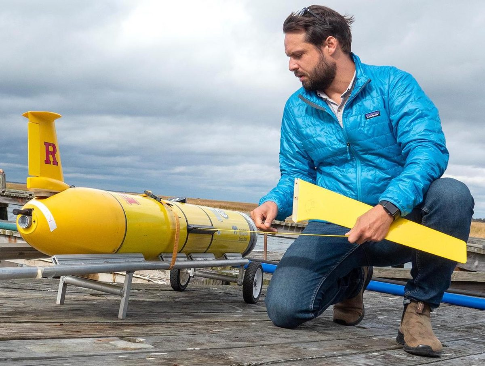

Travis N. Miles, Ph.D.
Associate Professor of Physical Oceanography
Center for Ocean Observing Leadership (RU COOL) · Department of Marine and Coastal Sciences
Rutgers University, New Brunswick, NJ
About
Observing the ocean where it matters most
I am a physical oceanographer who uses autonomous underwater gliders, ocean observing networks and coupled numerical models to study how the coastal and upper ocean responds to extreme weather and a changing climate.
My group at the Rutgers Center for Ocean Observing Leadership works on hurricane–ocean interactions, offshore wind and the Mid-Atlantic Bight Cold Pool, circulation in the Caribbean Sea and Gulf of Mexico, and new glider sensing and autonomy. Much of this work is done with operational partners so that ocean observations flow directly into hurricane and weather forecasts.
I received my Ph.D. in Physical Oceanography from Rutgers University (2014) and my M.S. and B.S. from North Carolina State University. I was a Fulbright Scholar at the University of Gothenburg, Sweden (2017), and serve on the editorial board of Frontiers in Marine Science (Ocean Observation), the Underwater Glider User Group steering committee, and as co-lead of the OceanGliders Storms Working Group.

Honors
- 2025SEBS Early Career International Excellence Award, Rutgers
- 2024The Oceanography Society Ocean Observing Team Award
- 2024Bristlemouth Pioneer Program
- 2020RBR Cohort Fellow
- 2018Marine Technology Society Young Professional Award
- 2017Fulbright Scholar, University of Gothenburg
Research
Research themes
Hurricanes & the Upper Ocean
Glider observations of how the upper ocean responds to, and feeds back on, tropical cyclones — and what that means for forecasts.
Learn more →Offshore Wind & the Cold Pool
Coastal upwelling, the Mid-Atlantic Bight Cold Pool and their links to offshore wind forecasting and development.
Learn more →Caribbean & Gulf Circulation
Transport and transformation of water masses in the Caribbean through-flow and the Gulf of Mexico Loop Current.
Learn more →Glider Technology & Sensors
New sensors, onboard processing and adaptive sampling that expand what autonomous gliders can measure.
Learn more →Coastal Ecosystems & Biogeochemistry
Connecting physical processes to carbonate chemistry, plankton, whales, fisheries and coral reefs.
Learn more →Polar Oceanography
Ice-shelf outflow, coastal mixing and phytoplankton along the West Antarctic Peninsula and Amundsen Sea.
Learn more →Publications
Recent articles
- Pareja-Roman, LF, Engdahl J., Miles, T., McGarigal C., (2026) Ocean mixing from offshore wind farms: implications for the US Mid-Atlantic Bight cold pool. Frontiers in Marine Science, 13, 10.3389/fmars.2026.1804138
- Gallagher, K., Baumgartner, M., Kohut, J., Miles, T., Flagg, C., McSweeney, J., Warren, J.D., Thorne, L. (2025). Passive acoustic monitoring of baleen whales using autonomous gliders in relation to offshore wind energy areas in the New York Bight. Endangered Species Research, 58, 257–273. doi: 10.3354/esr01452
- *Tsei, S., Howden, S., Diercks, A.-R., Zhang, J. A., Miles, T. N., Nyadjro, E., et al. (2025). Low Salinity, High Ocean Heat Content, and Warm Core Eddy Effects on the Upper Ocean Response During Hurricane Sally (2020): An Analysis of a Hurricane Glider Observations and Coupled Atmosphere-Ocean Model. Journal of Geophysical Research: Oceans 130, e2024JC021470. doi: 10.1029/2024JC021470
- *Gradone, J.C., Miles, T.N., Palter, J.B., Glenn, S.M., Wilson, W.D. (2025). Warming and salinity changes of the upper ocean Caribbean Through-Flow since 1960. Scientific Reports, 15, 23157. doi: 10.1038/s41598-025-05494-z
- Beaird, N., Miller, M., Book, J., Edwards, C. R., Edwards, J., Gong, D., Lynch, S., Miles, T., Osborne, J., (2025). Subtropical Mode Water as an acoustic waveguide at the Gulf Stream. J. Acoust. Soc. Am. 157, A95. doi: 10.1121/10.0037521